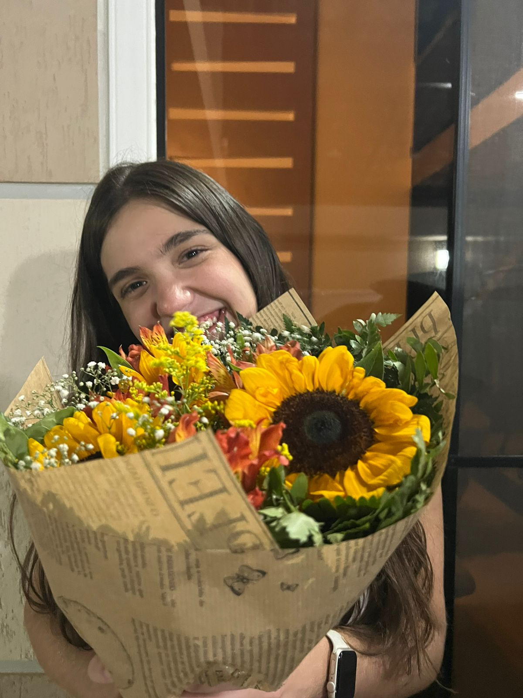

01. O Primeiro Olhar
A PRIMEIRA VEZ QUE TE VI
A primeira vez que eu te vi... Eu não sabia, mas estava diante da pessoa que mudaria a minha vida.
Naquele momento, eu não sabia seu nome, não conhecia sua história, não conhecia seus sonhos, seus medos, suas manias ou esse jeito que hoje eu amo tanto. Eu só tinha diante de mim uma menina que, de alguma forma, fez meu coração prestar atenção.
E é engraçado pensar nisso hoje... porque, olhando para trás, parece que alguma coisa dentro de mim já sabia.
Eu não sabia que aquele olhar seria o começo da nossa história. Não sabia que, algum tempo depois, eu estaria chamando você de amor da minha vida. Não sabia que seu abraço se tornaria um dos lugares onde eu mais gosto de estar, nem que seu sorriso seria capaz de mudar completamente o meu dia.
Eu simplesmente te vi.
E, sem perceber, comecei a encontrar em você tudo aquilo que eu nem sabia que estava procurando.
Talvez naquele primeiro instante eu ainda não soubesse que era você. Mas hoje, olhando para tudo o que vivemos desde então, eu tenho certeza de uma coisa:
Eu gostaria de voltar naquele momento só para olhar para você mais uma vez... e dizer para aquele Luiz que estava te conhecendo:
"Cuida dela. Porque essa menina ainda vai ser o amor da sua vida."
02. O Primeiro Encontro
O INÍCIO DE TUDO
Me lembro como se fosse ontem. Dia 14/03, o dia em que eu tive a certeza de que tinha encontrado o amor da minha vida.
É engraçado pensar que, por um descuido meu, por não ter feito a reserva no restaurante que eu tinha marcado com você e ter precisado mudar de última hora para o Outback, aquela noite acabou se tornando uma das melhores noites da minha vida.
Mas talvez tenha sido justamente isso que fez tudo ser tão especial.
Porque quando é a pessoa certa, não importa o lugar. Pode ser no restaurante mais bonito, em um parque, em uma viagem ou simplesmente sentados em um sofá, em silêncio, aproveitando a companhia um do outro. Quando é a pessoa certa, a presença dela já é suficiente.
E foi exatamente isso que eu senti naquela noite.
Eu lembro de estar ali com você e sentir uma paz que eu não sabia explicar. Ao mesmo tempo em que tudo parecia tão novo, havia uma sensação estranha de familiaridade, como se eu já conhecesse aquele lugar onde estava: ao seu lado.
Naquele dia, eu não sabia como seria o nosso futuro. Não sabia de todos os momentos que ainda viveríamos, dos abraços, dos beijos, das risadas, dos planos, dos sonhos e de todas as memórias que ainda iríamos construir.
Eu só sabia que não queria que aquela noite acabasse.
Porque naquela noite, a pessoa que eu tanto procurei me encontrou.
E, desde então, eu nunca mais precisie procurar.
03. Nossas Memórias & Querências

O Sorriso da minha felicidade
A dona da minha vida e do sorriso que preenche meus pensamentos e transforma um dia comum em um dia maravilhoso. Essa foto representa um pouco do que você é para mim: luz, alegria e amor. E assim como essas flores, você deixa tudo ao seu redor mais bonito simplesmente por estar presente.
Meu amor, que sorte a minha ter encontrado você e poder chamar de minha a pessoa que faz meu coração sorrir todos os dias. ❤️
Oh céus, ela é tão bela
Os olhos que eu poderia admirar por horas e ainda sentir que foi um pouco. Talvez você nem perceba, mas toda vez que olho para eles, encontro um pedacinho da paz que sempre procurei. ❤️
04. E para o nosso Futuro...
Meu amor,
Tudo o que eu mais desejo para os próximos meses e anos é continuar vivendo a nossa história ao seu lado. Quero estar presente em cada conquista, em cada sonho, em cada fase e em cada pequeno momento que a vida nos permite viver juntos.
Quero continuar descobrindo você, admirando seus olhos, cuidando do seu coração e construindo, pouco a pouco, a vida que tantas vezes sonhamos.
Que nunca nos falte amor, cumplicidade, carinho e vontade de escolher um ao outro todos os dias.
Porque, se hoje eu já estou tão feliz por ter encontrado você, mal posso esperar para descobrir tudo o que ainda vamos viver.
Eu te amo, Giovanna. Hoje, amanhã e em todos os nossos próximos capítulos. ❤️
Com todo meu amor,
Luiz Fernando